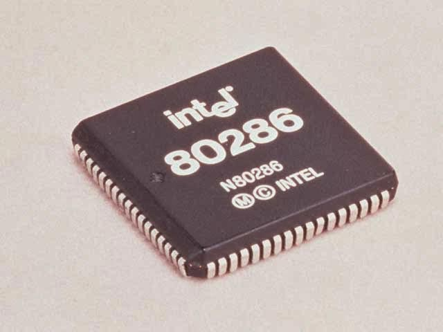
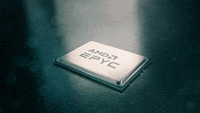

¿que son los procesadores?
Los procesadores, también conocidos como unidades centrales de procesamiento (CPU), son componentes esenciales en las computadoras y otros dispositivos electrónicos. Son responsables de ejecutar instrucciones y procesar datos, lo que los convierte en el "cerebro" de la máquina. estos, realizan una amplia gama de funciones, incluyendo la ejecución de instrucciones de programas, el cálculo de operaciones matemáticas, el manejo de la lógica de control y la coordinación de la comunicación entre diferentes componentes del sistema.

Los procesadores están compuestos por varias unidades funcionales, incluyendo la unidad de control, la unidad aritmético-lógica (ALU), los registros y las unidades de caché. Estas unidades trabajan juntas para ejecutar instrucciones y procesar datos de manera eficiente. los factores que miden la velocidad de procesamiento de este son la velocidad del reloj que es medida en herzions (Hz) y la cantidad de nucleos e hilos. ademas de esto, Los procesadores utilizan diferentes arquitecturas de instrucciones para ejecutar programas. Las arquitecturas más comunes incluyen x86 (utilizada en la mayoría de las computadoras personales), ARM (utilizada en dispositivos móviles y embebidos) y RISC (Reduced Instruction Set Computing, utilizado en algunos procesadores especializados)
los porcesadores funcionan mediante un ciclo básico de instrucción, que consta de varias etapas. siendo estas:
Recuperación de la instrucción (Fetch): En esta etapa, el procesador obtiene la próxima instrucción del programa desde la memoria principal. La dirección de la siguiente instrucción se almacena en un registro especial llamado "contador de programa" (program counter).
Decodificación de la instrucción (Decode): Una vez que se ha recuperado la instrucción, el procesador la decodifica para determinar qué operación debe realizarse y en qué datos debe operar. Esta etapa involucra la interpretación del código de operación (opcode) y la identificación de los registros o ubicaciones de memoria que contienen los datos necesarios.
Ejecución de la instrucción (Execute): En esta etapa, el procesador realiza la operación especificada por la instrucción. Esto puede involucrar operaciones aritméticas (como sumar, restar, multiplicar y dividir), operaciones lógicas (como AND, OR, NOT), o transferencias de datos entre registros o memoria.
Escritura de resultados (Writeback): Una vez que se completa la operación, los resultados se escriben de vuelta en el registro o la ubicación de memoria adecuada. Esto asegura que los resultados estén disponibles para su uso en futuras instrucciones.
Este ciclo básico de instrucción se repite continuamente mientras el procesador está en funcionamiento, ejecutando una secuencia de instrucciones para realizar tareas específicas. La velocidad a la que el procesador puede ejecutar este ciclo, medida en ciclos de reloj por segundo (Hertz),

los procesadores a su vez tuvieron sus mejoras con el paso de cada generacion de computadoras de la misma manera que el resto de los componenetes de una pc, siendo cada vez mas pequeños, compactos y rapidos, entre los cambios y mejoras generacionales tenemos los siguientes:
Primera Generación (1940-1956):
Segunda Generación (1956-1963):
Tercera Generación (1964-1971):
Cuarta Generación (1971-1980):
Quinta Generación (1980-presente):